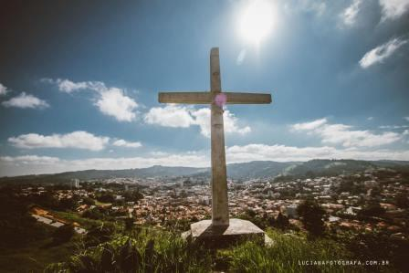
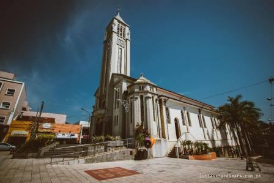

A História de São Roque
{kind=link}
A cidade de São Roque foi fundada em 16 de Agosto de 1657, pelo nobre capitão paulista Pedro Vaz de Barros, que pertenceu a uma velha linhagem de bandeirantes, e também era conhecido como Vaz Guaçu - O grande. Homem religioso resolveu batizar suas terras com o nome do santo de devoção. A povoação teve início numa fazenda, onde se utilizava mão-de-obra indígena no cultivo de trigais e vinhedos às margens dos ribeirões Carambeí e Aracaí. Pouco tempo depois, o irmão de Vaz Guaçu, o também capitão Fernão Paes de Barros, fixou-se na região, e ambos construíram capelas em suas terras; o primeiro em honra a São Roque, e o segundo, a Santo Antônio.
Na época, as capelas construídas em taipa de pilão, também serviam como parada e pousada das Bandeiras, que desciam o Rio Tietê em busca de ouro e esmeraldas. Nesse tempo, o transporte era feito, basicamente, por tropas de muares e, conforme o movimento se intensificava, o comércio e a lavoura locais cresciam. Para suprir a mão-de-obra cada vez mais escassa, os lavradores de então recorreram à importação de escravos africanos, um reforço que possibilitou à vila ampliar sua lavoura e diversificá-la, com novas culturas como as de milho, cana, café, em pequena escala, entre outras.
Após lento crescimento, o povoado inicial de São Roque foi elevado, em agosto de 1768 a freguesia, do município de Santana de Parnaíba, passando à categoria de vila em 10 de julho de 1832.
Como consequência desse crescimento, São Roque recebeu status de cidade em 22 de abril de 1864. No período entre 1872 e 1875, a cidade obteve alguns melhoramentos importantes, entre os quais a fundação da Santa Casa de Misericórdia e a inauguração da Estrada de Ferro Sorocabana. Posteriormente, por ocasião da Proclamação da República, São Roque ganhou novo impulso, com a chegada expressiva da imigração italiana. A vitivinicultura readquiriu sua importância com o emprego de italianos e também de portugueses. Mas somente a partir de 1936, no governo de Salles Oliveira, quando recebeu a cooperação e a assistência técnica da Secretaria da Agricultura, constituiu-se, definitivamente, como uma das principais atividades econômicas do município.
{kind=link}
Nas décadas seguintes, os imigrantes utilizaram as encostas dos morros para formarem vinhedos, depois instalaram suas adegas e transformaram São Roque na "Terra do Vinho", conhecida em todo o país. Hoje, São Roque é uma cidade de economia diversificada com atividades no segmento industrial, comercial e na área de serviços. Devido ao seu legado histórico e cultural, à sua exuberante natureza (40% do território do município é coberto por Mata Atlântica), o município foi elevado à condição de Estância Turística em 1990.
Desde então a cidade vem incrementando o seu potencial turístico dispondo de uma estrutura hoteleira abrangente, um roteiro gastronômico aprazível e aparelhos turísticos que contemplam o turismo rural, ecológico, cultural, de aventura e religioso. A apenas 60 Km de São Paulo o município está localizado num ponto estratégico entre as rodovias por Raposo Tavares e Castello Branco e se destaca por ser um local com excelente qualidade de vida.